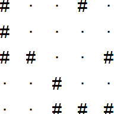
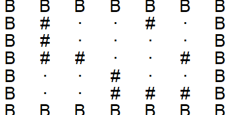
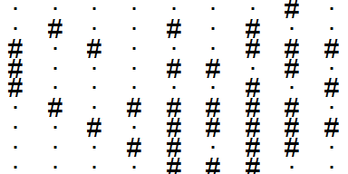

R setup
library(tidyverse)
library(gt)
library(tictoc)
library(lubridate)My solutions to the #AdventOfCode2021 coding challenges, days 16 through 20.
Taylor Dunn ![]()
December 16, 2021
[1] "C20D718021600ACDC372CD8DE7A057252A49C940239D68978F7970194EA7CCB3100..."As you leave the cave and reach open waters, you receive a transmission from the Elves back on the ship.
The transmission was sent using the Buoyancy Interchange Transmission System (BITS), a method of packing numeric expressions into a binary sequence. Your submarine’s computer has saved the transmission in hexadecimal (your puzzle input).
The first step of decoding the message is to convert the hexadecimal representation into binary. Each character of hexadecimal corresponds to four bits of binary data:
The BITS transmission contains a single packet at its outermost layer which itself contains many other packets. The hexadecimal representation of this packet might encode a few extra 0 bits at the end; these are not part of the transmission and should be ignored.
Every packet begins with a standard header: the first three bits encode the packet version, and the next three bits encode the packet type ID. These two values are numbers; all numbers encoded in any packet are represented as binary with the most significant bit first. For example, a version encoded as the binary sequence 100 represents the number 4.
Packets with type ID 4 represent a literal value. Literal value packets encode a single binary number. To do this, the binary number is padded with leading zeroes until its length is a multiple of four bits, and then it is broken into groups of four bits. Each group is prefixed by a 1 bit except the last group, which is prefixed by a 0 bit. These groups of five bits immediately follow the packet header.
Every other type of packet (any packet with a type ID other than 4) represent an operator that performs some calculation on one or more sub-packets contained within. Right now, the specific operations aren’t important; focus on parsing the hierarchy of sub-packets.
An operator packet contains one or more packets. To indicate which subsequent binary data represents its sub-packets, an operator packet can use one of two modes indicated by the bit immediately after the packet header; this is called the length type ID:
- If the length type ID is 0, then the next 15 bits are a number that represents the total length in bits of the sub-packets contained by this packet.
- If the length type ID is 1, then the next 11 bits are a number that represents the number of sub-packets immediately contained by this packet.
Finally, after the length type ID bit and the 15-bit or 11-bit field, the sub-packets appear.
For now, parse the hierarchy of the packets throughout the transmission and add up all of the version numbers.
Decode the structure of your hexadecimal-encoded BITS transmission; what do you get if you add up the version numbers in all packets?
Start by defining the hexadecimal character mapping and converting the input:
hex_map <- c(
"0" = "0000", "1" = "0001", "2" = "0010", "3" = "0011", "4" = "0100",
"5" = "0101", "6" = "0110", "7" = "0111", "8" = "1000", "9" = "1001",
"A" = "1010", "B" = "1011", "C" = "1100", "D" = "1101", "E" = "1110",
"F" = "1111"
)
input <- str_replace_all(day16, hex_map)
str_trunc(input, 90)[1] "110000100000110101110001100000000010000101100000000010101100110111000011011100101100110..."Second, define a function for parsing literal values (packets with type ID 4):
decode_literal_value <- function(input, i) {
literal_value <- ""
repeat {
lv <- str_sub(input, i, i + 4)
literal_value <- paste0(literal_value, str_sub(lv, 2, 5))
i <- i + 5
# If the bit starts with 0, end of packet
if (str_sub(lv, 1, 1) == "0") break
# Else not the last group, keep reading
}
list(i, literal_value)
}Now define the recursive function to parse the full strings:
decode_packet_part1 <- function(input, i = 1) {
packet_vers <- c(str_sub(input, i, i + 2) %>% strtoi(base = 2))
packet_type <- str_sub(input, i + 3, i + 5) %>% strtoi(base = 2)
i <- i + 6
# Literal values
if (packet_type == 4) {
literal_value <- decode_literal_value(input, i)
i <- literal_value[[1]]
value <- strtoi(literal_value[[2]], base = 2)
return(list(value = value, index = i, packet_vers = packet_vers))
}
# Otherwise an operator
values <- c()
length_type <- str_sub(input, i, i)
i <- i + 1
if (length_type == "0") {
# Next 15 bits are the number of bits in the sub-packets
n_bits <- str_sub(input, i, i + 14) %>% strtoi(base = 2)
i <- i + 15
end_bit <- i + n_bits
while (i < end_bit) {
subpacket <- decode_packet_part1(input, i)
packet_vers <- c(packet_vers, subpacket$packet_vers)
values <- c(values, subpacket$value)
i <- subpacket$index
}
} else if (length_type == "1") {
# Next 11 bits are the number of sub-packets
n_subpackets <- str_sub(input, i, i + 10) %>% strtoi(base = 2)
i <- i + 11
for (sp in 1:n_subpackets) {
subpacket <- decode_packet_part1(input, i)
packet_vers <- c(packet_vers, subpacket$packet_vers)
values <- c(values, subpacket$value)
i <- subpacket$index
}
}
return(list(value = values, index = i, packet_vers = packet_vers))
}Apply it to the input and sum up the versions:
Python:
hex_map = {'0': '0000', '1': '0001', '2': '0010', '3': '0011', '4': '0100',
'5': '0101', '6': '0110', '7': '0111', '8': '1000', '9': '1001',
'A': '1010', 'B': '1011', 'C': '1100', 'D': '1101', 'E': '1110',
'F': '1111'}
input = r.day16
for key, val in hex_map.items():
input = input.replace(key, val)
def decode_literal_value(input, i = 0):
literal_value = ""
while True:
lv = input[i:i+5]
literal_value += lv[1:]
i += 5
if lv[0] == "0": break
return i, int(literal_value, 2)
sum_packet_vers = 0
def decode_packet_part1(input, i = 0):
global sum_packet_vers
sum_packet_vers += int(input[i:i+3], 2)
packet_type = int(input[i+3:i+6], 2)
i += 6
if packet_type == 4:
i, value = decode_literal_value(input, i)
return i, value
values = []
length_type = input[i]
i += 1
if length_type == "0":
n_bits = int(input[i:i+15], 2)
i += 15
end_bit = i + n_bits
while i < end_bit:
i, value = decode_packet_part1(input, i)
values.append(value)
else:
n_subpackets = int(input[i:i+11], 2)
i += 11
for _ in range(n_subpackets):
i, value = decode_packet_part1(input, i)
values.append(value)
return i, values
_, _ = decode_packet_part1(input)
sum_packet_vers852Now that you have the structure of your transmission decoded, you can calculate the value of the expression it represents.
Literal values (type ID
4) represent a single number as described above. The remaining type IDs are more interesting:
- Packets with type ID
0are sum packets - their value is the sum of the values of their sub-packets. If they only have a single sub-packet, their value is the value of the sub-packet.- Packets with type ID
1are product packets - their value is the result of multiplying together the values of their sub-packets. If they only have a single sub-packet, their value is the value of the sub-packet.- Packets with type ID
2are minimum packets - their value is the minimum of the values of their sub-packets.- Packets with type ID
3are maximum packets - their value is the maximum of the values of their sub-packets.- Packets with type ID
5are greater than packets - their value is1if the value of the first sub-packet is greater than the value of the second sub-packet; otherwise, their value is0. These packets always have exactly two sub-packets.- Packets with type ID
6are less than packets - their value is1if the value of the first sub-packet is less than the value of the second sub-packet; otherwise, their value is0. These packets always have exactly two sub-packets.- Packets with type ID
7are equal to packets - their value is1if the value of the first sub-packet is equal to the value of the second sub-packet; otherwise, their value is0. These packets always have exactly two sub-packets.Using these rules, you can now work out the value of the outermost packet in your BITS transmission.
Define a function to compute packet values following the above rules:
compute_packet_val <- function(packet_type, literal_values) {
switch(
packet_type + 1,
sum(literal_values),
prod(literal_values),
min(literal_values),
max(literal_values),
NA, # packet_type = 4
ifelse(literal_values[1] > literal_values[2], 1, 0),
ifelse(literal_values[1] < literal_values[2], 1, 0),
ifelse(literal_values[1] == literal_values[2], 1, 0),
)
}The solution to this part took about an hour of debugging before I realized that the base R function strtoi cannot handle numbers greater than 2^31. Define a custom strtoi that accounts for integer overflow:
Now re-define the function from part 1 to return the value of the outermost packet in the transmission:
decode_packet_part2 <- function(input, i = 1) {
packet_vers <- c(str_sub(input, i, i + 2) %>% strtoi(base = 2))
packet_type <- str_sub(input, i + 3, i + 5) %>% strtoi(base = 2)
i <- i + 6
if (packet_type == 4) {
literal_value <- decode_literal_value(input, i)
i <- literal_value[[1]]
value <- strtoi_custom(literal_value[[2]])
return(list(value = value, index = i, packet_vers = packet_vers))
}
# Otherwise, an operator
values <- c()
length_type <- str_sub(input, i, i)
i <- i + 1
if (length_type == "0") {
# Next 15 bits are the number of bits in the sub-packets
n_bits <- str_sub(input, i, i + 14) %>% strtoi(base = 2)
i <- i + 15
end_bit <- i + n_bits
while (i < end_bit) {
subpacket <- decode_packet_part2(input, i)
packet_vers <- c(packet_vers, subpacket$packet_vers)
values <- c(values, subpacket$value)
i <- subpacket$index
}
} else if (length_type == "1") {
# Next 11 bits are the number of sub-packets
n_subpackets <- str_sub(input, i, i + 10) %>% strtoi(base = 2)
i <- i + 11
for (sp in 1:n_subpackets) {
subpacket <- decode_packet_part2(input, i)
packet_vers <- c(packet_vers, subpacket$packet_vers)
values <- c(values, subpacket$value)
i <- subpacket$index
}
}
value <- compute_packet_val(packet_type, values)
return(list(value = value, index = i, packet_vers = packet_vers))
}
part2_results <- decode_packet_part2(input)
format(part2_results$value, scientific = FALSE)[1] "19348959966392"Python:
def compute_packet_val(packet_type, values):
if packet_type == 0:
return sum(values)
elif packet_type == 1:
prod = 1
for v in values:
prod *= v
return prod
elif packet_type == 2:
return min(values)
elif packet_type == 3:
return max(values)
elif packet_type == 5:
return int(values[0] > values[1])
elif packet_type == 6:
return int(values[0] < values[1])
elif packet_type == 7:
return int(values[0] == values[1])
def decode_packet_part2(input, i = 0):
packet_vers = int(input[i:i+3], 2)
packet_type = int(input[i+3:i+6], 2)
i += 6
if packet_type == 4:
i, value = decode_literal_value(input, i)
return i, value
values = []
length_type = input[i]
i += 1
if length_type == "0":
n_bits = int(input[i:i+15], 2)
i += 15
end_bit = i + n_bits
while i < end_bit:
i, value = decode_packet_part2(input, i)
values.append(value)
else:
n_subpackets = int(input[i:i+11], 2)
i += 11
for _ in range(n_subpackets):
i, value = decode_packet_part2(input, i)
values.append(value)
value = compute_packet_val(packet_type, values)
return i, value
_, value = decode_packet_part2(input)
value19348959966392You finally decode the Elves’ message. HI, the message says. You continue searching for the sleigh keys.
Ahead of you is what appears to be a large ocean trench. Could the keys have fallen into it? You’d better send a probe to investigate.
The probe launcher on your submarine can fire the probe with any integer velocity in the x (forward) and y (upward, or downward if negative) directions. For example, an initial x,y velocity like 0,10 would fire the probe straight up, while an initial velocity like 10,-1 would fire the probe forward at a slight downward angle.
The probe’s x,y position starts at 0,0. Then, it will follow some trajectory by moving in steps. On each step, these changes occur in the following order:
- The probe’s x position increases by its x velocity.
- The probe’s y position increases by its y velocity.
- Due to drag, the probe’s x velocity changes by 1 toward the value 0; that is, it decreases by 1 if it is greater than 0, increases by 1 if it is less than 0, or does not change if it is already 0.
- Due to gravity, the probe’s y velocity decreases by 1.
For the probe to successfully make it into the trench, the probe must be on some trajectory that causes it to be within a target area after any step. The submarine computer has already calculated this target area (your puzzle input).
Find the initial velocity that causes the probe to reach the highest y position and still eventually be within the target area after any step. What is the highest y position it reaches on this trajectory?
Use tidyr::extract and regex to get the bounds of the target area:
target_area <- tibble(x = day17) %>%
extract(x,
into = c("xmin", "xmax", "ymin", "ymax"),
regex = "x=(.*)\\.\\.(.*), y=(.*)\\.\\.(.*)",
convert = TRUE)
target_area# A tibble: 1 × 4
xmin xmax ymin ymax
<int> <int> <int> <int>
1 156 202 -110 -69Since the \(x\) and \(y\) velocity are independent, we can work out the correct \(y\) velocity. Due to the way gravity works in this problem, any velocity \(v_y > 0\) starting at \(y = 0\) will be \(-v_y\) when it returns to \(y = 0\) on the way down. For example, for initial \(v_y = [1, 5]\) (vy_start), these are the steps and velocities when the probe reaches \(y = 0\) again:
crossing(vy_start = 1:5, step = 1:20) %>%
# Each step decreases y velocity by 1
mutate(vy = vy_start - step + 1) %>%
group_by(vy_start) %>%
# The y position is the cumulative sum of y velocities up this point
mutate(y = cumsum(vy)) %>%
ungroup() %>%
filter(y == 0)# A tibble: 5 × 4
vy_start step vy y
<int> <int> <dbl> <dbl>
1 1 3 -1 0
2 2 5 -2 0
3 3 7 -3 0
4 4 9 -4 0
5 5 11 -5 0Then it is just a matter of maximizing vy_start such that it lands at the lowest possible point in the target area, i.e. ymin. The highest possible vy_start is the one that will reach ymin in a single step from y = 0, i.e. vy_max = abs(ymin) - 1.
To calculate the \(y\) trajectory for this initial velocity, use cumsum:
trajectory <- crossing(vy_max, step = 1:1000) %>%
mutate(vy = vy_max - step + 1, y = cumsum(vy))
trajectory# A tibble: 1,000 × 4
vy_max step vy y
<dbl> <int> <dbl> <dbl>
1 109 1 109 109
2 109 2 108 217
3 109 3 107 324
4 109 4 106 430
5 109 5 105 535
6 109 6 104 639
7 109 7 103 742
8 109 8 102 844
9 109 9 101 945
10 109 10 100 1045
# … with 990 more rowsHere is the step where the probe reaches the edge of the target area:
# A tibble: 1 × 4
vy_max step vy y
<dbl> <int> <dbl> <dbl>
1 109 220 -110 -110And here is the maximum height reached by the probe (the answer to part 1):
And just to be sure, before answering, I need to verify that there is an initial \(x\) velocity, \(v_x\), that is slow enough (while still being an integer) that the probe will be between xmin and xmax (156 and 202), when it reaches the target area.
Due to drag, the \(x\) position will be a cumulative sum of decreasing integers. As I learned on day 7, this is a triangular number with the value:
\[ \sum_{i=1}^n k = \frac{n (n + 1)}{2}. \]
This means that the maximum \(x\) position reached for an initial \(x\) velocity \(v_x\) is:
\[ x_{\text{max}} = \frac{v_x (v_x + 1)}{2} \]
We need to find a \(v_x\) that reaches the target \(x\) between [156, 202] on or before step 220 (which is when we reach the target \(y\)).
tibble(vx_start = 1:30) %>%
mutate(xmax = vx_start * (vx_start + 1) / 2) %>%
filter(xmax >= target_area$xmin, xmax <= target_area$xmax)# A tibble: 2 × 2
vx_start xmax
<int> <dbl>
1 18 171
2 19 190So an initial \(v_x\) (vx_start) of 18 or 19 will reach the target area in fewer than 220 steps, which can be shown with the cumsum method as well:
tibble(vx_start = c(18, 19)) %>%
crossing(step = 1:target_step$step) %>%
mutate(vx = vx_start - step + 1,
# x velocity will never go lower than 0
vx = ifelse(vx < 0, 0, vx)) %>%
group_by(vx_start) %>%
mutate(x = cumsum(vx)) %>%
ungroup() %>%
filter(x >= target_area$xmin, x <= target_area$xmax) %>%
group_by(vx_start, x, vx) %>%
filter(step == min(step))# A tibble: 16 × 4
# Groups: vx_start, x, vx [16]
vx_start step vx x
<dbl> <int> <dbl> <dbl>
1 18 13 6 156
2 18 14 5 161
3 18 15 4 165
4 18 16 3 168
5 18 17 2 170
6 18 18 1 171
7 18 19 0 171
8 19 12 8 162
9 19 13 7 169
10 19 14 6 175
11 19 15 5 180
12 19 16 4 184
13 19 17 3 187
14 19 18 2 189
15 19 19 1 190
16 19 20 0 190Maybe a fancy trick shot isn’t the best idea; after all, you only have one probe, so you had better not miss.
To get the best idea of what your options are for launching the probe, you need to find every initial velocity that causes the probe to eventually be within the target area after any step.
How many distinct initial velocity values cause the probe to be within the target area after any step?
Find candidate \(y\) velocities, which reach the target area at some step in their trajectories:
vy_candidates <-
crossing(vy_start = seq(target_area$ymin, vy_max), step = 1:1000) %>%
mutate(vy = vy_start - step + 1) %>%
group_by(vy_start) %>%
mutate(y = cumsum(vy)) %>%
ungroup() %>%
filter(between(y, target_area$ymin, target_area$ymax)) %>%
select(-vy)
vy_candidates# A tibble: 268 × 3
vy_start step y
<int> <int> <dbl>
1 -110 1 -110
2 -109 1 -109
3 -108 1 -108
4 -107 1 -107
5 -106 1 -106
6 -105 1 -105
7 -104 1 -104
8 -103 1 -103
9 -102 1 -102
10 -101 1 -101
# … with 258 more rowsThere are 192 unique starting \(v_y\) values which will reach the \(y\) target. Do the same for the \(x\) target:
vx_candidates <-
crossing(vx_start = 1:target_area$xmax, step = 1:1000) %>%
mutate(vx = vx_start - step + 1, vx = ifelse(vx < 0, 0, vx)) %>%
group_by(vx_start) %>%
mutate(x = cumsum(vx)) %>%
ungroup() %>%
filter(between(x, target_area$xmin, target_area$xmax)) %>%
select(-vx)
vx_candidates# A tibble: 2,125 × 3
vx_start step x
<int> <int> <dbl>
1 18 13 156
2 18 14 161
3 18 15 165
4 18 16 168
5 18 17 170
6 18 18 171
7 18 19 171
8 18 20 171
9 18 21 171
10 18 22 171
# … with 2,115 more rowsThere are 121 unique starting \(v_x\) values which will reach the \(x\) target.
To determine which combination of \(v_x\) and \(v_y\) are valid, I need to find the combinations that line up in steps taken to reach the target:
vxy_candidates <- vx_candidates %>%
inner_join(vy_candidates, by = "step") %>%
filter(!is.na(vx_start), !is.na(vy_start))
vxy_candidates %>%
group_by(vx_start, vy_start) %>%
summarise(steps = str_c(step, collapse = ", "), .groups = "drop")# A tibble: 3,202 × 3
vx_start vy_start steps
<int> <int> <chr>
1 18 -2 13
2 18 -1 13, 14
3 18 0 13, 14, 15
4 18 1 14, 15, 16
5 18 2 15, 16, 17
6 18 3 16, 17, 18
7 18 4 18, 19, 20
8 18 5 19, 20, 21
9 18 6 20, 21, 22
10 18 7 22, 23, 24
# … with 3,192 more rowsThere are 3202 unique combinations of vx_start and vy_start which reach the target area during one or more steps.
[1] "[[7,[1,5]],[[5,7],[[0,8],2]]]"
[2] "[[[[7,3],[2,2]],3],[[[7,1],[9,1]],2]]"
[3] "[[[3,[0,2]],[5,2]],8]"
[4] "[[[[1,5],8],[[0,5],[0,0]]],2]"
[5] "[[[[9,9],1],[8,[3,2]]],[0,8]]"
[6] "[[[[0,8],6],6],[[1,5],[[5,5],[4,6]]]]"You descend into the ocean trench and encounter some snailfish. They say they saw the sleigh keys! They’ll even tell you which direction the keys went if you help one of the smaller snailfish with his math homework.
Snailfish numbers aren’t like regular numbers. Instead, every snailfish number is a pair - an ordered list of two elements. Each element of the pair can be either a regular number or another pair.
Pairs are written as
[x,y], where x and y are the elements within the pair. Here are some example snailfish numbers, one snailfish number per line:
[1,2][[1,2],3][9,[8,7]][[1,9],[8,5]]This snailfish homework is about addition. To add two snailfish numbers, form a pair from the left and right parameters of the addition operator. For example,
[1,2]+[[3,4],5]becomes[[1,2],[[3,4],5]].There’s only one problem: snailfish numbers must always be reduced, and the process of adding two snailfish numbers can result in snailfish numbers that need to be reduced.
To reduce a snailfish number, you must repeatedly do the first action in this list that applies to the snailfish number:
- If any pair is nested inside four pairs, the leftmost such pair explodes.
- If any regular number is 10 or greater, the leftmost such regular number splits.
Once no action in the above list applies, the snailfish number is reduced.
During reduction, at most one action applies, after which the process returns to the top of the list of actions. For example, if split produces a pair that meets the explode criteria, that pair explodes before other splits occur.
To explode a pair, the pair’s left value is added to the first regular number to the left of the exploding pair (if any), and the pair’s right value is added to the first regular number to the right of the exploding pair (if any). Exploding pairs will always consist of two regular numbers. Then, the entire exploding pair is replaced with the regular number
0.To split a regular number, replace it with a pair; the left element of the pair should be the regular number divided by two and rounded down, while the right element of the pair should be the regular number divided by two and rounded up. For example,
10becomes[5,5],11becomes[5,6],12becomes[6,6], and so on.The homework assignment involves adding up a list of snailfish numbers (your puzzle input). The snailfish numbers are each listed on a separate line. Add the first snailfish number and the second, then add that result and the third, then add that result and the fourth, and so on until all numbers in the list have been used once.
To check whether it’s the right answer, the snailfish teacher only checks the magnitude of the final sum. The magnitude of a pair is 3 times the magnitude of its left element plus 2 times the magnitude of its right element. The magnitude of a regular number is just that number.
Add up all of the snailfish numbers from the homework assignment in the order they appear. What is the magnitude of the final sum?
For reading the data in, I’ll parse it like JSON with the jsonlite package:
Through lots of trial and error working through the examples, I wrote the following helper functions:
This gets the nested location and value of the first-occurring exploding pair:
get_explode_pair <- function(sn) {
ei <- purrr::detect_index(sn, ~vec_depth(.x) >= 5)
if (ei > 0) {
ep <- pluck(sn, ei)
# Get the indicies that specify the exploding pair
vd <- vec_depth(sn[[ei]])
for (d in seq(vd - 1, 2)) {
ei <- c(ei, detect_index(ep, ~vec_depth(.x) == d))
ep <- pluck(ep, tail(ei, 1))
}
return(list(ei, unlist(ep)))
} else {
return(list())
}
}
ex1 <- fromJSON("[[[[[9,8],1],2],3],4]", simplifyVector = FALSE)
(res <- get_explode_pair(ex1))[[1]]
[1] 1 1 1 1
[[2]]
[1] 9 8This finds the left- and right-most values adjacent to an exploding pair:
find_adjacent_idx <- function(sn, ei, side = c("L", "R")) {
if (side == "L") {
# Remove levels until we find a node to the left
while (tail(ei, 1) == 1) {
ei <- head(ei, -1)
if (length(ei) == 0) return(ei) # no nodes to the left
}
ei[length(ei)] <- ei[length(ei)] - 1
# Add levels until we find the right-most regular number
while (is.list(pluck(sn, !!!ei))) {
ei <- c(ei, length(pluck(sn, !!!ei)))
}
} else if (side == "R") {
# Remove levels until we find a node to the right
ei[length(ei)] <- ei[length(ei)] + 1
while (is.null(pluck(sn, !!!ei))) {
ei <- head(ei, -1)
if (length(ei) == 0) return(ei) # no nodes to the right
ei[length(ei)] <- ei[length(ei)] + 1
}
# Add levels until we find the left-most regular number
while (is.list(pluck(sn, !!!ei))) {
ei <- c(ei, 1)
}
}
return(ei)
}
right_idx <- find_adjacent_idx(ex1, res[[1]], side = "R")
right_idx[1] 1 1 1 2This explodes the pair at the given location:
explode_pair <- function(sn, res) {
ei <- res[[1]]
ep <- res[[2]]
left_idx <- find_adjacent_idx(sn, ei, side = "L")
if (length(left_idx) > 0) {
pluck(sn, !!!left_idx) <- pluck(sn, !!!left_idx) + ep[1]
}
right_idx <- find_adjacent_idx(sn, ei, side = "R")
if (length(right_idx) > 0) {
pluck(sn, !!!right_idx) <- pluck(sn, !!!right_idx) + ep[2]
}
pluck(sn, !!!ei) <- 0
return(sn)
}
explode_pair(ex1, res)[[1]]
[[1]][[1]]
[[1]][[1]][[1]]
[[1]][[1]][[1]][[1]]
[1] 0
[[1]][[1]][[1]][[2]]
[1] 9
[[1]][[1]][[2]]
[1] 2
[[1]][[2]]
[1] 3
[[2]]
[1] 4This finds the index and value of a split:
get_split <- function(sn) {
# Find the first value >= 10 (if it exists)
sv <- unlist(sn)
sv <- sv[sv >= 10][1]
if (is.na(sv)) {
return(list())
} else {
si <- purrr::detect_index(sn, ~any(unlist(.x) == sv))
sn <- pluck(sn, si)
#while (length(sn) > 1) {
while (is.list(sn)) {
si <- c(si, detect_index(sn, ~any(unlist(.x) == sv)))
sn <- pluck(sn, tail(si, 1))
}
}
return(list(si, sv))
}
ex2 <- fromJSON("[[[[0,7],4],[15,[0,13]]],[1,1]]", simplifyVector = FALSE)
(res <- get_split(ex2))[[1]]
[1] 1 2 1
[[2]]
[1] 15This splits the value at the given location:
split_val <- function(sn, res) {
sv <- list(floor(res[[2]] / 2), ceiling(res[[2]] / 2))
si <- res[[1]]
pluck(sn, !!!si) <- sv
return(sn)
}
split_val(ex2, res)[[1]]
[[1]][[1]]
[[1]][[1]][[1]]
[[1]][[1]][[1]][[1]]
[1] 0
[[1]][[1]][[1]][[2]]
[1] 7
[[1]][[1]][[2]]
[1] 4
[[1]][[2]]
[[1]][[2]][[1]]
[[1]][[2]][[1]][[1]]
[1] 7
[[1]][[2]][[1]][[2]]
[1] 8
[[1]][[2]][[2]]
[[1]][[2]][[2]][[1]]
[1] 0
[[1]][[2]][[2]][[2]]
[1] 13
[[2]]
[[2]][[1]]
[1] 1
[[2]][[2]]
[1] 1Then the main loop to reduce a snailfish number (or two numbers added together) is:
reduce_snailfish_num <- function(sn1, sn2 = NULL) {
if (is.null(sn2)) {
sn <- sn1
} else {
sn <- list(sn1, sn2)
}
repeat {
res_explode <- get_explode_pair(sn)
if (!is_empty(res_explode)) {
sn <- explode_pair(sn, res_explode)
} else {
res_split <- get_split(sn)
if (!is_empty(res_split)) {
sn <- split_val(sn, res_split)
} else {
break
}
}
}
sn
}Applying this loop recursively to the input of 100 snailfish numbers can be done with purrr::reduce:
Then the function to calculate the magnitudes:
calc_magnitude <- function(reduced_input) {
repeat {
if (!is.list(reduced_input)) return(reduced_input)
vd <- vec_depth(reduced_input)
reduced_input <- reduced_input %>%
map_depth(
.depth = vd - 2,
function(x) {
if (length(x) == 2) 3 * x[[1]] + 2 * x[[2]]
else x
}
) %>%
map_depth(.depth = vd - 2, unlist)
}
}Compute the magnitude of the input:
You notice a second question on the back of the homework assignment:
What is the largest magnitude you can get from adding only two of the snailfish numbers?
The input contains 100 snailfish numbers, so we have to consider 99 * 99 = 9801 unique additions (because addition is commutative in this scenario). I predict long computation time, so break out the big (i.e. parallel) guns:
tic()
part2_results <- crossing(i = 1:length(input), j = 1:length(input)) %>%
filter(i != j) %>%
mutate(
reduced_input = future_map2(
i, j,
~reduce_snailfish_num(c(input[.x], input[.y]))
),
magnitude = future_map_dbl(reduced_input, calc_magnitude)
)
toc()73.75 sec elapsedAnd the maximum magnitude:
[1] "--- scanner 0 ---" "712,493,-580" "-705,-746,944"
[4] "-468,-742,927" "-906,-760,-387" "523,612,505"
[7] "-973,425,-333" "361,-777,-655" "-172,-143,-8"
[10] "403,-606,-574" "-655,761,677" "-670,-738,898"
[13] "459,511,-563" "713,-623,478" "-605,714,848"
[16] "-18,-8,104" "510,641,739" "-991,515,-523"
[19] "556,559,577" "709,-678,647" "789,-632,517"
[22] "-976,-761,-391" "-966,491,-435" "-611,679,810"
[25] "383,-654,-565" "641,491,-564" "-790,-798,-400"
[28] "" "--- scanner 1 ---" "-286,612,-671" As your probe drifted down through this area, it released an assortment of beacons and scanners into the water. It’s difficult to navigate in the pitch black open waters of the ocean trench, but if you can build a map of the trench using data from the scanners, you should be able to safely reach the bottom.
The beacons and scanners float motionless in the water; they’re designed to maintain the same position for long periods of time. Each scanner is capable of detecting all beacons in a large cube centered on the scanner; beacons that are at most 1000 units away from the scanner in each of the three axes (x, y, and z) have their precise position determined relative to the scanner. However, scanners cannot detect other scanners. The submarine has automatically summarized the relative positions of beacons detected by each scanner (your puzzle input).
For example, if a scanner is at
x,y,zcoordinates500,0,-500and there are beacons at-500,1000,-1500and1501,0,-500, the scanner could report that the first beacon is at-1000,1000,-1000(relative to the scanner) but would not detect the second beacon at all.Unfortunately, while each scanner can report the positions of all detected beacons relative to itself, the scanners do not know their own position. You’ll need to determine the positions of the beacons and scanners yourself.
The scanners and beacons map a single contiguous 3d region. This region can be reconstructed by finding pairs of scanners that have overlapping detection regions such that there are at least 12 beacons that both scanners detect within the overlap. By establishing 12 common beacons, you can precisely determine where the scanners are relative to each other, allowing you to reconstruct the beacon map one scanner at a time.
Unfortunately, there’s a second problem: the scanners also don’t know their rotation or facing direction. Due to magnetic alignment, each scanner is rotated some integer number of 90-degree turns around all of the
x,y, andzaxes. That is, one scanner might call a direction positivex, while another scanner might call that direction negativey. Or, two scanners might agree on which direction is positivex, but one scanner might be upside-down from the perspective of the other scanner. In total, each scanner could be in any of 24 different orientations: facing positive or negativex,y, orz, and considering any of four directions “up” from that facing.Because all coordinates are relative, in this example, all “absolute” positions will be expressed relative to scanner
0(using the orientation of scanner0and as if scanner0is at coordinates0,0,0).Assemble the full map of beacons. How many beacons are there?
input <- day19
scanners <-
split(input[input != ""], cumsum(input == "")[input != ""]) %>%
map_dfr(
function(x) {
enframe(x[-1], name = "i") %>%
mutate(scanner = str_extract(x[1], "\\d+") %>% as.integer())
}
) %>%
separate(value, into = c("x", "y", "z"), sep = ",", convert = TRUE)
scanners# A tibble: 723 × 5
i x y z scanner
<int> <int> <int> <int> <int>
1 1 712 493 -580 0
2 2 -705 -746 944 0
3 3 -468 -742 927 0
4 4 -906 -760 -387 0
5 5 523 612 505 0
6 6 -973 425 -333 0
7 7 361 -777 -655 0
8 8 -172 -143 -8 0
9 9 403 -606 -574 0
10 10 -655 761 677 0
# … with 713 more rowsI want to generate a “blueprint” for each scanner that uniquely identifies it with relative positions of beacons. To do this, I will compute the pairwise squared distances (\(x^2 + y^2 +z^2\)) between each beacon for a single scanner.
scanners_pair_dist <-
inner_join(scanners, scanners, by = "scanner", suffix = c("1", "2")) %>%
filter(i1 != i2) %>%
mutate(dist2 = (x1 - x2)^2 + (y1 - y2)^2 + (z1 - z2)^2) %>%
select(scanner, i1, i2, dist2)
scanners_pair_dist# A tibble: 17,952 × 4
scanner i1 i2 dist2
<int> <int> <int> <dbl>
1 0 1 2 5865586
2 0 1 3 5188674
3 0 1 4 4225182
4 0 1 5 1227107
5 0 1 6 2904858
6 0 1 7 1741726
7 0 1 8 1513136
8 0 1 9 1303318
9 0 1 10 3520562
10 0 1 11 5609769
# … with 17,942 more rowsFind the overlap between scanners by joining with pairwise distances:
scanners_overlap <-
inner_join(scanners_pair_dist, scanners_pair_dist, by = "dist2",
suffix = c("_s1", "_s2")) %>%
filter(scanner_s1 < scanner_s2) %>%
pivot_longer(cols = c(i1_s2, i2_s2),
names_to = "name", values_to = "i_s2") %>%
count(scanner_s1, scanner_s2, i_s1 = i1_s1, i_s2) %>%
group_by(scanner_s1, scanner_s2, i_s1) %>%
slice_max(n) %>%
ungroup() %>%
group_by(scanner_s1, scanner_s2) %>%
filter(n() >= 12) %>%
ungroup() %>%
select(-n)
scanners_overlap# A tibble: 386 × 4
scanner_s1 scanner_s2 i_s1 i_s2
<int> <int> <int> <int>
1 0 11 2 19
2 0 11 3 7
3 0 11 4 22
4 0 11 6 2
5 0 11 10 3
6 0 11 11 25
7 0 11 14 21
8 0 11 17 26
9 0 11 21 17
10 0 11 22 16
# … with 376 more rowsThis is where I got stuck. Couldn’t figure out how to reorient the scanners, until I read David Robinson’s solution. I’ll slightly adapt my solution following his code.
First, put each scanner’s beacon positions into a three-column matrix:
scanner_matrices <- scanners %>%
group_by(scanner) %>%
summarize(matrix = list(cbind(x, y, z)))
scanner_matrices# A tibble: 28 × 2
scanner matrix
<int> <list>
1 0 <int [26 × 3]>
2 1 <int [25 × 3]>
3 2 <int [26 × 3]>
4 3 <int [26 × 3]>
5 4 <int [25 × 3]>
6 5 <int [26 × 3]>
7 6 <int [26 × 3]>
8 7 <int [26 × 3]>
9 8 <int [26 × 3]>
10 9 <int [26 × 3]>
# … with 18 more rowsThen get the matrix representations of just the overlapping beacons of each scanner pair:
overlap_matrices <- scanners_overlap %>%
group_by(scanner_s1, scanner_s2) %>%
summarize(i_s1 = list(i_s1), i_s2 = list(i_s2), .groups = "drop") %>%
ungroup() %>%
# Attach the matrix of beacon positions for each scanner
inner_join(scanner_matrices %>% select(scanner, matrix1 = matrix),
by = c("scanner_s1" = "scanner")) %>%
inner_join(scanner_matrices %>% select(scanner, matrix2 = matrix),
by = c("scanner_s2" = "scanner")) %>%
# Index the matrices by the overlapping beacons
mutate(matrix1 = map2(matrix1, i_s1, ~ .x[.y, ]),
matrix2 = map2(matrix2, i_s2, ~ .x[.y, ]))
overlap_matrices# A tibble: 32 × 6
scanner_s1 scanner_s2 i_s1 i_s2 matrix1 matrix2
<int> <int> <list> <list> <list> <list>
1 0 11 <int [12]> <int [12]> <int [12 × 3]> <int [12 × 3]>
2 0 12 <int [12]> <int [12]> <int [12 × 3]> <int [12 × 3]>
3 0 24 <int [12]> <int [12]> <int [12 × 3]> <int [12 × 3]>
4 1 10 <int [12]> <int [12]> <int [12 × 3]> <int [12 × 3]>
5 1 11 <int [12]> <int [12]> <int [12 × 3]> <int [12 × 3]>
6 1 19 <int [12]> <int [12]> <int [12 × 3]> <int [12 × 3]>
7 2 7 <int [12]> <int [12]> <int [12 × 3]> <int [12 × 3]>
8 3 12 <int [12]> <int [12]> <int [12 × 3]> <int [12 × 3]>
9 3 20 <int [12]> <int [12]> <int [12 × 3]> <int [12 × 3]>
10 3 24 <int [12]> <int [12]> <int [12 × 3]> <int [12 × 3]>
# … with 22 more rowsThought this part was clever from David – matching the standard deviations of the of the columns to determine the correct ordering of (x,y,z), then using relative positions to correct direction:
find_matrix_trans <- function(m1, m2) {
m1_sds <- round(apply(m1, 2, sd))
m2_sds <- round(apply(m2, 2, sd))
# Reorient m2's xyz to match m1
reorderer <- match(m2_sds, m1_sds)
m1 <- m1[, reorderer]
# Reorient the direction
facing <- (m2[2, ] - m2[1, ]) / (m1[2, ] - m1[1, ])
m1 <- t(facing * t(m1))
# Find the difference
delta <- (m2 - m1)[1, ]
list(reorderer = reorderer, facing = facing, delta = delta)
}
overlap_matrices_trans <- overlap_matrices %>%
transmute(scanner_s1, scanner_s2,
trans = map2(matrix1, matrix2, find_matrix_trans))
overlap_matrices_trans$trans[[1]]$reorderer
[1] 1 3 2
$facing
x y z
-1 1 1
$delta
x y z
-1384 28 51 Then this function applies the transformation:
apply_matrix_trans <- function(m, trans) {
ret <- t(trans$facing * t(m[, trans$reorderer]) + trans$delta)
colnames(ret) <- c("x", "y", "z")
ret
}
overlap_matrices$matrix2[[1]] %>%
apply_matrix_trans(overlap_matrices_trans$trans[[1]]) x y z
[1,] -705 -667 1023
[2,] -468 -663 1006
[3,] -906 -681 -308
[4,] -973 504 -254
[5,] -655 840 756
[6,] -670 -659 977
[7,] -605 793 927
[8,] -991 594 -444
[9,] -976 -682 -312
[10,] -966 570 -356
[11,] -611 758 889
[12,] -790 -719 -321Compile the transformations in both directions:
Put the matrix transformations into a tbl_graph:
library(tidygraph)
library(igraph)
# Need to re-assign tidyr::crossing from igraph::crossing
crossing <- tidyr::crossing
g <- graph_from_data_frame(overlap_matrices_trans) %>%
as_tbl_graph() %>%
arrange(as.integer(name))
g# A tbl_graph: 28 nodes and 64 edges
#
# A directed simple graph with 1 component
#
# Node Data: 28 × 1 (active)
name
<chr>
1 0
2 1
3 2
4 3
5 4
6 5
# … with 22 more rows
#
# Edge Data: 64 × 3
from to trans
<int> <int> <list>
1 1 12 <named list [3]>
2 1 13 <named list [3]>
3 1 25 <named list [3]>
# … with 61 more rowsFinally, apply the series of transformations. This is done in a shortest path graph type fashion, with edges connecting the scanners with 12 or more beacons in common:
Then the unique beacon locations:
Sometimes, it’s a good idea to appreciate just how big the ocean is. Using the Manhattan distance, how far apart do the scanners get?
What is the largest Manhattan distance between any two scanners?
map_dfr(res, as_tibble) %>%
distinct(x1 = x, y1 = y, z1 = z) %>%
mutate(b1 = row_number()) %>%
crossing(., rename(., b2 = b1, x2 = x1, y2 = y1, z2 = z1)) %>%
filter(b1 < b2) %>%
mutate(manhattan = abs(x1 - x2) + abs(y1 - y2) + abs(z1 - z2)) %>%
pull(manhattan) %>%
max(na.rm = TRUE)[1] 15762Definitely the hardest puzzle yet. And reading online, that seems to be the consensus. Big shout outs to David Robinson and the R for Data Science Slack group for posting their solutions.
[1] "########.###.##.##..##..#...##..##..####.##...##..#.#.#####....#......"
[2] ""
[3] "...#....##.###...##.#..#....#.###.##.....#..#...###....#.###..###.#..."
[4] ".#...#.#.#.####..#...#..#.#..###.##..#.####...#....###..###...#.##...."
[5] "#####.#.#..##..##..#.#.###.#..##.##.##.##.....#..#....#.#.##.#.##.#..."
[6] "...##.#...######.#..##..###...##..#.##.##.#..#####.##.#..##..#.####..."With the scanners fully deployed, you turn their attention to mapping the floor of the ocean trench.
When you get back the image from the scanners, it seems to just be random noise. Perhaps you can combine an image enhancement algorithm and the input image (your puzzle input) to clean it up a little.
The first section is the image enhancement algorithm. It is normally given on a single line, but it has been wrapped to multiple lines in this example for legibility. The second section is the input image, a two-dimensional grid of light pixels (
#) and dark pixels (.).The image enhancement algorithm describes how to enhance an image by simultaneously converting all pixels in the input image into an output image. Each pixel of the output image is determined by looking at a 3x3 square of pixels centered on the corresponding input image pixel.
Starting from the top-left and reading across each row, these pixels are
..., then#.., then.#.; combining these forms...#...#..By turning dark pixels (.) into0and light pixels (#) into1, the binary number000100010can be formed, which is34in decimal. The image enhancement algorithm string is exactly 512 characters long, enough to match every possible 9-bit binary number.Through advances in imaging technology, the images being operated on here are infinite in size. Every pixel of the infinite output image needs to be calculated exactly based on the relevant pixels of the input image. The small input image you have is only a small region of the actual infinite input image; the rest of the input image consists of dark pixels (
.).Start with the original input image and apply the image enhancement algorithm twice, being careful to account for the infinite size of the images. How many pixels are lit in the resulting image?
Split the algorithm from the input image:
get_input <- function(raw_input) {
algo <- str_split(raw_input[1], "")[[1]]
raw_input <- tibble(x = raw_input[-c(1, 2)]) %>%
transmute(row = row_number(),
value = str_split(x, pattern = "")) %>%
unnest(value) %>%
group_by(row) %>%
mutate(col = 1:n()) %>%
ungroup()
list(algo, raw_input)
}
day20 <- get_input(day20)Also get the example input to show how the functions work:
Define a helper function to visualize the grid:
plot_grid <- function(input) {
input %>%
mutate(value = str_replace(value, "\\.", "·")) %>%
ggplot(aes(x = col, y = -row)) +
geom_text(aes(label = value)) +
theme_void()
}
plot_grid(input)
A function to add border rows and columns:
add_borders <- function(input) {
crossing(
row = seq(min(input$row) - 1, max(input$row) + 1),
col = seq(min(input$col) - 1, max(input$col) + 1)
) %>%
left_join(input, by = c("row", "col"))
}
add_borders(input) %>%
# Visualize borders with a "B"
mutate(value = replace_na(value, "B")) %>%
plot_grid()
This function returns the numeric representation of the binary “#” and “.” strings:
get_output_bin_num <- function(value) {
value %>%
str_replace_all("\\.", "0") %>%
str_replace_all("\\#", "1") %>%
strtoi(base = 2)
}
get_output_bin_num("...#...#.")[1] 34Now the function to enhance the image.
neighbors <- tibble(drow = c(-1, -1, -1, 0, 0, 0, 1, 1, 1),
dcol = c(-1, 0, 1, -1, 0, 1, -1, 0, 1))
enhance_image <- function(input, border_value) {
input <- add_borders(input)
input %>%
crossing(neighbors) %>%
mutate(row2 = row + drow, col2 = col + dcol) %>%
left_join(input %>% rename(value2 = value),
by = c("row2" = "row", "col2" = "col")) %>%
mutate(value2 = replace_na(value2, border_value)) %>%
group_by(row, col) %>%
summarise(bin_str = paste0(value2, collapse = ""), .groups = "drop") %>%
mutate(bin_num = get_output_bin_num(bin_str),
value = algo[bin_num + 1]) %>%
select(row, col, value)
}
input %>%
enhance_image(border_value = ".") %>%
enhance_image(border_value = ".") %>%
plot_grid()
Get the real input:
There is a trick to the real input: the infinitely expanding border does not always expand with “.” values like in the example. A string of 9 “.” or “#” gives the following values from the algorithm:
So the expanding border alternates between “.” and “#” values.
Enhance the image twice, alternating the border symbol, and count the “#”:
You still can’t quite make out the details in the image. Maybe you just didn’t enhance it enough.
If you enhance the starting input image in the above example a total of 50 times, 3351 pixels are lit in the final output image.
Start again with the original input image and apply the image enhancement algorithm 50 times. How many pixels are lit in the resulting image?
Same implementation as part 1, just takes a little longer:
Here are my personal stats for these last 5 days:
tibble::tribble(
~Part, ~Day, ~Time, ~Rank, ~Score,
1, 20, "19:01:44", 14482, 0,
2, 20, "19:02:45", 14121, 0,
1, 19, ">24h", 10784, 0,
2, 19, ">24h", 10507, 0,
1, 18, "16:49:00", 10889, 0,
2, 18, "23:57:22", 13109, 0,
1, 17, "11:28:12", 16798, 0,
2, 17, "11:58:11", 15435, 0,
1, 16, "12:48:03", 14816, 0,
2, 16, "14:50:34", 14616, 0
) %>%
select(-Score) %>%
pivot_wider(names_from = Part, values_from = c(Time, Rank),
names_glue = "Part {Part}_{.value}") %>%
mutate(
`Time between parts` = as.numeric(hms(`Part 2_Time`) - hms(`Part 1_Time`),
"minutes") %>% round(1)
) %>%
gt() %>%
tab_spanner_delim(delim = "_", split = "first") %>%
sub_missing(columns = "Time between parts", missing_text = "")| Day | Time | Rank | Time between parts | ||
|---|---|---|---|---|---|
| Part 1 | Part 2 | Part 1 | Part 2 | ||
| 20 | 19:01:44 | 19:02:45 | 14482 | 14121 | 1.0 |
| 19 | >24h | >24h | 10784 | 10507 | |
| 18 | 16:49:00 | 23:57:22 | 10889 | 13109 | 428.4 |
| 17 | 11:28:12 | 11:58:11 | 16798 | 15435 | 30.0 |
| 16 | 12:48:03 | 14:50:34 | 14816 | 14616 | 122.5 |
And here is my position on the private leaderboard:
library(httr)
leaderboard <- httr::GET(
url = "https://adventofcode.com/2021/leaderboard/private/view/1032765.json",
httr::set_cookies(session = Sys.getenv("AOC_COOKIE"))
) %>%
content() %>%
as_tibble() %>%
unnest_wider(members) %>%
arrange(desc(local_score)) %>%
transmute(
Rank = 1:n(), Name = name, Score = local_score, Stars = stars
)leaderboard %>%
gt() %>%
text_transform(
locations = cells_body(columns = Stars),
fn = function(stars_col) {
map_chr(stars_col,
~html(paste0(.x, fontawesome::fa('star', fill = 'gold'))))
}
) %>%
cols_align("left") %>%
tab_style(
style = list(cell_text(weight = "bold")),
locations = cells_body(
rows = (Name == "taylordunn")
)
) %>%
tab_options(container.height = 500)| Rank | Name | Score | Stars |
|---|---|---|---|
| 1 | Colin Rundel | 5094 | 40 |
| 2 | David Robinson | 5082 | 40 |
| 3 | @ClareHorscroft | 5027 | 40 |
| 4 | trang1618 | 5019 | 40 |
| 5 | Ildikó Czeller | 4879 | 40 |
| 6 | pritikadasgupta | 4630 | 40 |
| 7 | Anna Fergusson | 4480 | 40 |
| 8 | @_TanHo | 4433 | 36 |
| 9 | Josh Gray | 4432 | 40 |
| 10 | ashbaldry | 4261 | 40 |
| 11 | Tom Jemmett | 4224 | 40 |
| 12 | dhimmel | 4046 | 33 |
| 13 | Jarosław Nirski | 3990 | 34 |
| 14 | mbjoseph | 3987 | 40 |
| 15 | Jonathan Spring | 3918 | 34 |
| 16 | Jean-Rubin | 3899 | 36 |
| 17 | Emil Hvitfeldt | 3836 | 30 |
| 18 | Jim Leach | 3753 | 40 |
| 19 | Riinu Pius | 3684 | 36 |
| 20 | Calum You | 3641 | 38 |
| 21 | taylordunn | 3533 | 40 |
| 22 | Darrin Speegle | 3531 | 40 |
| 23 | @Mid1995Sed | 3513 | 36 |
| 24 | Melinda Tang | 3265 | 31 |
| 25 | TJ Mahr | 3221 | 38 |
| 26 | gpecci | 3184 | 27 |
| 27 | Jaap Walhout | 2959 | 32 |
| 28 | patelis | 2936 | 32 |
| 29 | Farhan Reynaldo | 2849 | 30 |
| 30 | KT421 | 2809 | 32 |
| 31 | martigso | 2784 | 32 |
| 32 | john-b-edwards | 2775 | 24 |
| 33 | fabio machado | 2773 | 28 |
| 34 | hrushikeshrv | 2762 | 27 |
| 35 | long39ng | 2747 | 32 |
| 36 | AlbertRapp | 2619 | 31 |
| 37 | jordi figueras puig | 2615 | 29 |
| 38 | Sherry Zhang | 2615 | 24 |
| 39 | @_mnar99 | 2597 | 24 |
| 40 | Tokhir Dadaev | 2573 | 27 |
| 41 | Aron Strandberg | 2454 | 29 |
| 42 | Dusty Turner | 2445 | 33 |
| 43 | @E_E_Akcay | 2355 | 26 |
| 44 | Doortje Theunissen | 2344 | 28 |
| 45 | Andrew Argeros | 2265 | 22 |
| 46 | Jacqueline Nolis | 2122 | 17 |
| 47 | Nathan Moore | 2074 | 25 |
| 48 | mkiang | 2019 | 17 |
| 49 | duju211 | 2005 | 27 |
| 50 | scalgary | 1962 | 24 |
| 51 | Derek Holliday | 1925 | 18 |
| 52 | Matt Onimus | 1885 | 24 |
| 53 | Kelly N. Bodwin | 1842 | 22 |
| 54 | delabj | 1830 | 22 |
| 55 | Jenna Jordan | 1797 | 28 |
| 56 | Flavien Petit | 1784 | 21 |
| 57 | HannesOberreiter | 1740 | 18 |
| 58 | CarlssonLeo | 1653 | 22 |
| 59 | Jeffrey Brabec | 1641 | 22 |
| 60 | Alex N | 1498 | 17 |
| 61 | rywhale | 1467 | 20 |
| 62 | Daniel Coulton | 1440 | 18 |
| 63 | @woodspock | 1433 | 17 |
| 64 | Zach Bogart 💙 | 1402 | 14 |
| 65 | karawoo | 1382 | 15 |
| 66 | blongworth | 1353 | 21 |
| 67 | Arun Chavan | 1343 | 17 |
| 68 | TylerGrantSmith | 1269 | 17 |
| 69 | exunckly | 1254 | 15 |
| 70 | Scott-Gee | 1193 | 17 |
| 71 | Erez Shomron | 1148 | 17 |
| 72 | Nerwosolek | 1140 | 16 |
| 73 | pi55p00r | 1082 | 15 |
| 74 | Ghislain Nono Gueye | 972 | 14 |
| 75 | Miha Gazvoda | 924 | 14 |
| 76 | cramosu | 902 | 10 |
| 77 | cathblatter | 860 | 13 |
| 78 | mfiorina | 839 | 15 |
| 79 | Sydney | 821 | 11 |
| 80 | A-Farina | 793 | 15 |
| 81 | MetaMoraleMundo | 775 | 7 |
| 82 | @mfarkhann | 760 | 15 |
| 83 | jwinget | 753 | 15 |
| 84 | Andrew Tungate | 710 | 15 |
| 85 | collinberke | 687 | 8 |
| 86 | ldnam | 663 | 6 |
| 87 | Eric Ekholm | 635 | 11 |
| 88 | cynthiahqy | 623 | 14 |
| 89 | dirkschumacher | 619 | 10 |
| 90 | Adam Mahood | 616 | 6 |
| 91 | Gypeti Casino | 599 | 12 |
| 92 | Maya Gans | 589 | 11 |
| 93 | antdurrant | 568 | 9 |
| 94 | David Schoch | 551 | 6 |
| 95 | AmitLevinson | 473 | 7 |
| 96 | Julian Tagell | 473 | 5 |
| 97 | Josiah Parry | 454 | 7 |
| 98 | thedivtagguy | 436 | 6 |
| 99 | andrew-tungate-cms | 421 | 6 |
| 100 | @Maatspencer | 409 | 8 |
| 101 | @KentWeyrauch | 404 | 8 |
| 102 | Wendy Christensen | 391 | 6 |
| 103 | Emryn Hofmann | 390 | 7 |
| 104 | columbaspexit | 382 | 8 |
| 105 | ALBERT | 377 | 4 |
| 106 | Alan Feder | 345 | 6 |
| 107 | Kevin Kent | 335 | 7 |
| 108 | olmgeorg | 327 | 6 |
| 109 | Daniel Gemara | 302 | 4 |
| 110 | quickcoffee | 282 | 6 |
| 111 | Andrew Fraser | 248 | 3 |
| 112 | soto solo | 244 | 3 |
| 113 | jennifer-furman | 242 | 4 |
| 114 | Adrian Perez | 216 | 4 |
| 115 | Billy Fryer | 209 | 5 |
| 116 | April | 197 | 2 |
| 117 | Lukas Gröninger | 173 | 4 |
| 118 | Kyle Ligon | 166 | 6 |
| 119 | Duncan Gates | 129 | 5 |
| 120 | Jose Pliego San Martin | 125 | 2 |
| 121 | aleighbrown | 118 | 2 |
| 122 | Bruno Mioto | 98 | 3 |
| 123 | chapmandu2 | 64 | 4 |
| 124 | @jdknguyen | 36 | 3 |
| 125 | Matthew Wankiewicz | 20 | 1 |
| 126 | CaioBrighenti | 0 | 0 |
| 127 | Rizky Luthfianto | 0 | 0 |
| 128 | NA | 0 | 0 |
| 129 | Tony ElHabr | 0 | 0 |
| 130 | jacquietran | 0 | 0 |
| 131 | Wiktor Jacaszek | 0 | 0 |
setting value
version R version 4.2.1 (2022-06-23 ucrt)
os Windows 10 x64 (build 19044)
system x86_64, mingw32
ui RTerm
language (EN)
collate English_Canada.utf8
ctype English_Canada.utf8
tz America/Curacao
date 2022-10-27
pandoc 2.18 @ C:/Program Files/RStudio/bin/quarto/bin/tools/ (via rmarkdown)python: C:/Users/tdunn/Documents/.virtualenvs/r-reticulate/Scripts/python.exe
libpython: C:/Users/tdunn/AppData/Local/r-reticulate/r-reticulate/pyenv/pyenv-win/versions/3.9.13/python39.dll
pythonhome: C:/Users/tdunn/Documents/.virtualenvs/r-reticulate
version: 3.9.13 (tags/v3.9.13:6de2ca5, May 17 2022, 16:36:42) [MSC v.1929 64 bit (AMD64)]
Architecture: 64bit
numpy: C:/Users/tdunn/Documents/.virtualenvs/r-reticulate/Lib/site-packages/numpy
numpy_version: 1.23.3
NOTE: Python version was forced by use_python functionLocal: main C:/Users/tdunn/Documents/tdunn-quarto
Remote: main @ origin (https://github.com/taylordunn/tdunn-quarto.git)
Head: [4eb5bf2] 2022-10-26: Added font import to style sheet@online{dunn2021,
author = {Taylor Dunn},
title = {Advent of {Code} 2021: {Days} 16-20},
date = {2021-12-16},
url = {https://tdunn.ca/posts/2021-12-16-advent-of-code-2021-days-16-20},
langid = {en}
}